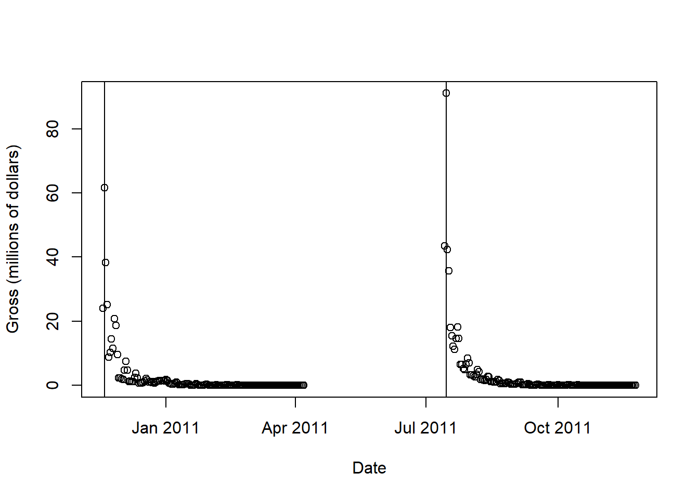

At the end of our discussion about regular expressions, we introduced the concept of web scraping. Not all online data is in a tidy, downloadable format such as a .csv or .RData file. Yet, patterns in the underlying HTML code and regular expressions together provide a valuable way to “scrape” data off of a webpage. Here, we’re going to work through an example of webscraping. We’re going to get data on ticket sales of every movie, for every day going back to 2010.
As a preliminary matter, some R packages, such as rvest and chromote, can help with web scraping. Eventually you may wish to explore those packages. For now, we are going to work with basic fundamentals so that you have the most flexibility to extract data from most websites.
First, you will need to make sure that you can access the underlying HTML code for the webpage that you want to scrape. In most browsers you can simply right click on a webpage and then click “View Page Source.” If you’re using Microsoft Edge, you can right click on the webpage, click “View Source” and then look at the “Debugger” tab. In Safari select “Settings,” select the “Advanced” tab, check “Show Develop menu,” and then whenever viewing a page you can right click and select “show page source”.
Have a look at the webpage http://www.the-numbers.com/box-office-chart/daily/2025/07/04. This page contains information about the movies that were shown in theaters on July 4, 2025 and the amount of money (in dollars) that each of those movies grossed that day.
Have a look at the HTML code by looking at the page source for this page using the methods described above. The first 10 lines should look something like this:
<!DOCTYPE html>
<html xmlns:og="https://ogp.me/ns#">
<head>
<link rel="icon" href="https://www.the-numbers.com/images/logo_2021/favicon.ico">
<script async src="https://www.googletagmanager.com/gtag/js?id=G-5K2DT3XQN5"></script>
<script>window.dataLayer = window.dataLayer || []; function gtag() { dataLayer.push(arguments); } gtag('js', new Date()); gtag('config', 'G-5K2DT3XQN5');</script>
<meta http-equiv="PICS-Label" content='(PICS-1.1 "https://www.icra.org/ratingsv02.html" l gen true for "https://www.the-numbers.com/" r (cb 1 lz 1 nz 1 oz 1 vz 1) "https://www.rsac.org/ratingsv01.html" l gen true for "https://www.the-numbers.com/" r (n 0 s 0 v 0 l 0))'>
<meta http-equiv="Content-Type" content="text/html; charset=utf-8">
<meta name="format-detection" content="telephone=no"> <!-- for apple mobile -->
<script src="https://code.jquery.com/jquery-3.3.1.min.js" integrity="sha256-FgpCb/KJQlLNfOu91ta32o/NMZxltwRo8QtmkMRdAu8=" crossorigin="anonymous"></script>
This is all HTML code to set up the page. If you scroll down a few hundred lines, you will find code that looks like this:
I see Jurassic World Rebirth and F1: The Movie. In addition to the movie name, there are ticket sales, number of theaters, and more. It is all wrapped in a lot of HTML code to make it look pretty on a web page, but for our purposes we just want to pull those numbers out.
scan() is a basic R function for reading in text, from the keyboard, from files, from the web, … however data might arrive. Giving scan() a URL causes scan() to pull down the HTML code for that page and return it to you. Let’s try one page of movie data.
library(dplyr)a <-scan("http://www.the-numbers.com/box-office-chart/daily/2025/07/04",what="", sep="\n")# examine the first few linesa[1:5]
what="" tells scan() to expect plain text and sep="\n" tells scan() to separate each element when it reaches a line feed character, signaling the end of a line.
Some websites are more complex or use different text encoding. On those websites scan() produces unintelligible text. The GET() function from the httr package can sometimes resolve this.
<!DOCTYPE html>
<html xmlns:og="https://ogp.me/ns#">
<head>
<link rel="icon" href="https://www.the-numbers.com/images/logo_2021/favicon.ico">
<script async src="https://www.googletagmanager.com/gtag/js?id=G-5K2DT3XQN5"></script>
<script>window.dataLayer = window.dataLayer || []; function gtag() { dataLayer.push(arguments); } gtag('js', new Date()); gtag('config', 'G-5K2DT3XQN5');</script>
<meta http-equiv="PICS-Label" content='(PICS-1.1 "https://www.icra.org/ratingsv02.html" l gen true for "https://www.the-numbers.com/" r (cb 1 lz 1 nz 1 oz 1 vz 1) "https://www.rsac.org/ratingsv01.html" l gen true for "https://www.the-numbers.com/" r (n 0 s 0 v 0 l 0))'>
<meta http-equiv="Content-Type" content="text/html; charset=utf-8">
<meta name="format-detection" content="telephone=no"> <!-- for apple mobile -->
<script src="https://code.jquery.com/jquery-3.3.1.min.js" integrity="sha256-FgpCb/KJQlLNfOu91ta32o/NMZxltwRo8QtmkMRdAu8=" crossorigin="anonymous"></script>
Also, some Mac users will encounter snags with both of these methods and receive “403 Forbidden” errors while their Mac colleague right next to them on the same network will not. I have not figured out why this happens, but have found that making R masquerade as different browser sometimes works.
resp <-GET("http://www.the-numbers.com/box-office-chart/daily/2025/07/04", user_agent("Mozilla/5.0 (Macintosh; Intel Mac OS X 10_6_8) AppleWebKit/537.13+ (KHTML, like Gecko) Version/5.1.7 Safari/534.57.2"))a1 <-content(resp, as="text")a1 <-strsplit(a1,"\n")[[1]]
2 Scraping one page
Now that we have stored in the variable a the HTML code for one day’s movie data in R, let’s apply some regular expressions to extract the data. The HTML code includes a lot of lines that do not involve data that interests us. There is code for making the page look nice and code for presenting advertisements. Let’s start by finding the lines that have the movie names in them.
Going back to the HTML code, I noticed that both the line with Jurassic World Rebirth and F1: The Movie have the sequence of characters “#tab=box-office”. By finding a pattern of characters that always precedes the text that interests us, we can use it to grep the lines we want. Let’s find every line that has “#tab=box-office” in it.
These are the line numbers that, if the pattern holds, contain our movie titles. Note that the source code that you might see in your browser may be a little different from the line numbers you see here. Even if you run this code on a different day, you might get different line numbers because some of the code, code for advertisements in particular, can frequently change.
Let’s see what these lines of HTML code look like.
a[i]
[1] "<td><b><a href=\"/movie/Jurassic-World-Rebirth-(2025)#tab=box-office\">Jurassic World Rebirth</a></b></td>"
[2] "<td><b><a href=\"/movie/F1-The-Movie-(2025)#tab=box-office\">F1: The Movie</a></b></td>"
[3] "<td><b><a href=\"/movie/How-to-Train-Your-Dragon-(2025)#tab=box-office\">How to Train Your Dragon</a></b></td>"
[4] "<td><b><a href=\"/movie/Elio-(2025)#tab=box-office\">Elio</a></b></td>"
[5] "<td><b><a href=\"/movie/28-Years-Later-(2025)#tab=box-office\">28 Years Later</a></b></td>"
[6] "<td><b><a href=\"/movie/M3GAN-2-0-(2025)#tab=box-office\">M3GAN 2.0</a></b></td>"
[7] "<td><b><a href=\"/movie/Lilo-and-Stitch-(2025)#tab=box-office\">Lilo & Stitch</a></b></td>"
[8] "<td><b><a href=\"/movie/Mission-Impossible-The-Final-Reckoning-(2025)#tab=box-office\">Mission: Impossible—The F…</a></b></td>"
[9] "<td><b><a href=\"/movie/This-is-Spinal-Tap#tab=box-office\">This is Spinal Tap</a></b></td>"
[10] "<td><b><a href=\"/movie/Materialists-(2025)#tab=box-office\">Materialists</a></b></td>"
[11] "<td><b><a href=\"/movie/Sardaar-Ji-3-(2025-India)#tab=box-office\">Sardaar Ji 3</a></b></td>"
[12] "<td><b><a href=\"/movie/From-the-World-of-John-Wick-Ballerina-(2025)#tab=box-office\">From the World of John Wi…</a></b></td>"
[13] "<td><b><a href=\"/movie/Phoenician-Scheme-The-(2025)#tab=box-office\">The Phoenician Scheme</a></b></td>"
[14] "<td><b><a href=\"/movie/Karate-Kid-Legends-(2025)#tab=box-office\">Karate Kid: Legends</a></b></td>"
[15] "<td><b><a href=\"/movie/Final-Destination-Bloodlines-(2025)#tab=box-office\">Final Destination: Bloodl…</a></b></td>"
[16] "<td><b><a href=\"/movie/Life-of-Chuck-The-(2025)#tab=box-office\">The Life of Chuck</a></b></td>"
[17] "<td><b><a href=\"/movie/Sinners-(2025)#tab=box-office\">Sinners</a></b></td>"
[18] "<td><b><a href=\"/movie/Sorry-Baby-(2025)#tab=box-office\">Sorry, Baby</a></b></td>"
[19] "<td><b><a href=\"/movie/Thunderbolts-(2025)#tab=box-office\">Thunderbolts*</a></b></td>"
[20] "<td><b><a href=\"/movie/Last-Rodeo-The-(2025)#tab=box-office\">The Last Rodeo</a></b></td>"
[21] "<td><b><a href=\"/movie/Friendship-(2025)#tab=box-office\">Friendship</a></b></td>"
[22] "<td><b><a href=\"/movie/Bring-Her-Back-(2025)#tab=box-office\">Bring Her Back</a></b></td>"
[23] "<td><b><a href=\"/movie/Jane-Austen-a-gache-ma-vie-(2025-France)#tab=box-office\">Jane Austen Wrecked My Life</a></b></td>"
[24] "<td><b><a href=\"/movie/Hearts-of-Darkness-A-Filmmakers-Apocalypse#tab=box-office\">Hearts of Darkness: A Fil…</a></b></td>"
[25] "<td><b><a href=\"/movie/Hot-Milk-(2025-United-Kingdom)#tab=box-office\">Hot Milk</a></b></td>"
[26] "<td><b><a href=\"/movie/Unholy-Trinity-The-(2025)#tab=box-office\">The Unholy Trinity</a></b></td>"
[27] "<td><b><a href=\"/movie/Ran-(1985-Japan)#tab=box-office\">Ran</a></b></td>"
[28] "<td><b><a href=\"/movie/Dragon-Heart-Adventures-Beyond-This-World-(2025-Japan)#tab=box-office\">Dragon Heart — Adventures…</a></b></td>"
[29] "<td><b><a href=\"/movie/Dangerous-Animals-(2025-Australia)#tab=box-office\">Dangerous Animals</a></b></td>"
[30] "<td><b><a href=\"/movie/King-of-Kings-The-(2025-South-Korea)#tab=box-office\">The King of Kings</a></b></td>"
Double checking and indeed the first line here is Jurassic World Rebirth and the last line is The King of Kings. This matches what is on the web page. We now are quite close to having a list of movies that played in theaters on July 4, 2025. However, as you can see, we have a lot of excess symbols and HTML code to eliminate before we can have a neat list of movie names.
HTML tags are always have the form <some code here>. Therefore, any text between a less than and greater than symbol we should remove. Here is a regular expression that will look for a < followed by a bunch of characters that are not > followed by the HTML tag ending >… and gsub() will delete them.
gsub("<[^>]*>", "", a[i])
[1] "Jurassic World Rebirth" "F1: The Movie"
[3] "How to Train Your Dragon" "Elio"
[5] "28 Years Later" "M3GAN 2.0"
[7] "Lilo & Stitch" "Mission: Impossible—The F…"
[9] "This is Spinal Tap" "Materialists"
[11] "Sardaar Ji 3" "From the World of John Wi…"
[13] "The Phoenician Scheme" "Karate Kid: Legends"
[15] "Final Destination: Bloodl…" "The Life of Chuck"
[17] "Sinners" "Sorry, Baby"
[19] "Thunderbolts*" "The Last Rodeo"
[21] "Friendship" "Bring Her Back"
[23] "Jane Austen Wrecked My Life" "Hearts of Darkness: A Fil…"
[25] "Hot Milk" "The Unholy Trinity"
[27] "Ran" "Dragon Heart — Adventures…"
[29] "Dangerous Animals" "The King of Kings"
Perfect! Now we just have movie names. You will see some movie names have strange symbols, like …. That is the HTML code for horizontal ellipses or “…”. These make the text look prettier on a webpage, but you might need to do more work with gsub() if it is important that these movie names look right.
Let’s put these movie names in a data frame, data0. This data frame currently has only one column.
Note that the movie gross is two lines after the movie name. It turns out that this is consistent for all movies. Since i has the line numbers for the movie names, then i+2 must be the line numbers containing the daily gross.
Again we need to strip out the HTML tags. We will also remove the dollar signs and commas so that R will recognize it as a number. We will add this to data0 also.
Take a look at the webpage and compare it to the dataset you have now created. All the values should now match.
head(data0)
movie gross
1 Jurassic World Rebirth 26235450
2 F1: The Movie 6960390
3 How to Train Your Dragon 2909540
4 Elio 1500046
5 28 Years Later 1106889
6 M3GAN 2.0 972945
tail(data0)
movie gross
25 Hot Milk 796
26 The Unholy Trinity 680
27 Ran 629
28 Dragon Heart — Adventures… 606
29 Dangerous Animals 506
30 The King of Kings 143
3 Scraping Multiple Pages
We have now successfully scraped data for one day. This is usually the hardest part. But if we have R code that can correctly scrape one day’s worth of data and the website is consistent across days, then it is simple to adapt our code to work for all days. So let’s get all movie data from January 1, 2010 through July 31, 2025. That means we are going to be web scraping 5,691 pages of data.
We can extract data from any other date by using the same URL, but changing the ending to match the date that we want. Importantly, note that the 07 and the 04 in the URL must have the leading 0 for the URL to return the correct page.
To start, let’s make a list of all the dates that we intend to scrape.
library(lubridate)# create a sequence of all days to scrapedates2scrape <-seq(ymd("2010-01-01"), ymd("2025-07-31"), by="days")
Now dates2scrape contains a collection of all the dates with movie data that we wish to scrape.
Our plan is to construct a for loop within which we will construct a URL from dates2scrape, pull down the HTML code from that URL, scrape the movie data into a data frame, and then combine the each day’s data frame into one data frame will all of the movie data. First we create a list that will contain each day’s data frame.
results <-vector("list", length(dates2scrape))
On iteration i of our for loop we will store that day’s movie data frame in results[[i]]. The following for loop can take several minutes to run and its speed will depend on your network connection and how responsive the web site is. Before running the entire for loop, it may be a good idea to temporarily set the dates to a short period of time (e.g., a month or two) just to verify that your code is functioning properly. Once you have concluded that the code is doing what you want it to do, you can set the dates so that the for loop runs for the entire analysis period.
This takes about an hour to pull all the data.
timeStart <-Sys.time() # record the starting timefor(iDate in1:length(dates2scrape)){# useful to know how much is done/left to gomessage(dates2scrape[iDate])# construct URL urlText <-paste0("https://www.the-numbers.com/box-office-chart/daily/",gsub("-", "/", dates2scrape[iDate]))# read in the HTML code... now using UTF8 a <-scan(urlText, what="", sep="\n", fileEncoding="UTF-8")# find movies i <-grep("#tab=box-office", a)# get movie names and gross data0 <-data.frame(movie=gsub("<[^>]*>", "", a[i]),gross=as.numeric(gsub("<[^>]*>|[$,]","",a[i+2])))# add date into the dataset data0$date <- dates2scrape[iDate] results[[iDate]] <- data0}# calculate how long it tooktimeEnd <-Sys.time()timeEnd-timeStart
Let’s look at the first 3 lines of the first and last 3 days.
# first 6 rows of first 3 daysresults |>head(3) |>lapply(head)
[[1]]
movie gross date
1 Avatar 25274008 2010-01-01
2 Sherlock Holmes 14889882 2010-01-01
3 Alvin and the Chipmunks: … 12998264 2010-01-01
4 It’s Complicated 7127425 2010-01-01
5 The Blind Side 4554779 2010-01-01
6 Up in the Air 4112263 2010-01-01
[[2]]
movie gross date
1 Avatar 25835551 2010-01-02
2 Sherlock Holmes 14373564 2010-01-02
3 Alvin and the Chipmunks: … 14373273 2010-01-02
4 It’s Complicated 7691535 2010-01-02
5 The Blind Side 4997659 2010-01-02
6 Up in the Air 4457565 2010-01-02
[[3]]
movie gross date
1 Avatar 17381129 2010-01-03
2 Alvin and the Chipmunks: … 7818116 2010-01-03
3 Sherlock Holmes 7349035 2010-01-03
4 It’s Complicated 3984005 2010-01-03
5 The Blind Side 2360311 2010-01-03
6 The Princess and the Frog 2264727 2010-01-03
# first 6 rows of last 3 daysresults |>tail(3) |>lapply(head)
[[1]]
movie gross date
1 The Fantastic Four: First… 14189835 2025-07-29
2 Superman 4288442 2025-07-29
3 Jurassic World Rebirth 2369215 2025-07-29
4 Smurfs 1416078 2025-07-29
5 Together 1300000 2025-07-29
6 F1: The Movie 1140072 2025-07-29
[[2]]
movie gross date
1 The Fantastic Four: First… 8657354 2025-07-30
2 Superman 2948138 2025-07-30
3 Together 2668751 2025-07-30
4 Jurassic World Rebirth 1661935 2025-07-30
5 Smurfs 986958 2025-07-30
6 F1: The Movie 858496 2025-07-30
[[3]]
movie gross date
1 The Fantastic Four: First… 7514899 2025-07-31
2 Superman 2665771 2025-07-31
3 The Bad Guys 2 2250000 2025-07-31
4 The Naked Gun 1600000 2025-07-31
5 Jurassic World Rebirth 1543785 2025-07-31
6 Together 1387751 2025-07-31
Looks like we got them all. Now let’s combine them into one big data frame. bind_rows() takes a list of data frames, like results[[1]], results[[2]], …, and stacks them all on top of each other.
movieData <-bind_rows(results)# check that the number of rows and dates seem reasonablenrow(movieData)
[1] 223063
range(movieData$date)
[1] "2010-01-01" "2025-07-31"
If you ran that for-loop to gather 15 years worth of data, most likely you walked away from your computer to do something more interesting than watch its progress. In these situations, I like to send myself a text message when it is complete. The emayili package is a convenient way to send yourself an email or text. If you fill it in with your email, username, and gmail app password, the following code will send you an email or text message when the script reaches this point. (as of August 2025 I have not been able to get this to work)
library(emayili)# https://myaccount.google.com/apppasswords# get a 16 character "app password"smtp <-server(host ="smtp.gmail.com", port =587,username ="you@gmail.com",password ="REPLACE WITH 16 CHARACTER APP PASSWORD",starttls =TRUE,use_ssl =FALSE)# Verizon: 5551234567@vtext.com# AT&T: 5551234567@txt.att.net# T-Mobile: 5551234567@tmomail.netemail <-envelope() |>from("you@gmail.com") |>to("5551234567@vtext.com") |>text("Come back! Your movie data is ready!")smtp(email, verbose =TRUE)
Note that the password here is in plain text so do not try this on a public computer. R also saves your history so even if it is not on the screen it might be saved somewhere else on the computer.
4 Parallel Computing
Since 1965 Moore’s Law has predicted the power of computation over time. Moore’s Law predicted the doubling of transistors about every two years. Moore’s prediction has held true for decades. However, to get that speed the transistors were made smaller and smaller. Moore’s Law cannot continue indefinitely. The diameter of a silicon atom is 0.2nm. Transistors today contain less than 70 atoms and some transistor dimensions are between 10nm and 40nm. Since 2012, computing power has not changed greatly signaling that we might be getting close to the end of Moore’s Law, at least with silicon-based computing. What has changed is the widespread use of multicore processors. Rather than having a single processor, a typical laptop might have an 8 or 16 core processor (meaning they have 8 or 16 processors that share some resources like high speed memory).
R can guess how many cores your computer has on hand.
Having access to multiple cores allows you to write scripts that send different tasks to different processors to work on simultaneously. While one processor is busy scraping the data for January 1st, the second can get to work on January 2nd, and another can work on January 3rd. All the processors will be fighting over the one connection you have to the internet, but they can grep() and gsub() at the same time other processors are working on other dates.
To write a script to work in parallel, you will need the foreach and future packages. Let’s first test whether parallelization actually speed things up. There are two foreach loops below. In both of them, each iteration of the loop does not really do anything except pause for 2 seconds. The first loop, which does not use parallelization, includes 10 iterations and so should take 20 seconds to run. The second foreach loop looks the same, except right before the foreach loop we have told R to make use of two of the computer’s processors rather than the default of one processor. This should cause one processor to sleep for 2 seconds 10 times and the other processor to sleep for 2 seconds 10 times. In total this should take about 10 seconds.
library(foreach)# should take 10*2=20 secondssystem.time( # time how long this takesforeach(i=1:10) %do%# not in parallel {Sys.sleep(2) # wait for 2 secondsreturn(i) })
user system elapsed
0.04 0.00 20.45
# set up R to use 2 coresplan(multisession, workers =2)# tells %dopar% to use the plan's 2 coresregisterDoFuture()# with two processors should take about 10 secondssystem.time(foreach(i=1:10) %dopar%# run in parallel {Sys.sleep(2)return(i) })
user system elapsed
0.14 0.00 10.55
Sure enough, the parallel implementation was able to complete 20 seconds worth of sleeping in about 10 seconds. To set up code to run in parallel, the key steps are to set up the cores using plan() and to tell parallel foreach() to use that cluster of processors with registerDoFuture(). Note that the key difference between the two foreach() statements is that the first foreach() is followed by a %do% while the second is followed by a %dopar%. When foreach() sees the %dopar% it will check what was set up in the registerDoFuture() call and spread the computation among those cores.
Note that the foreach() differs a little bit in its syntax compared with our previous use of for-loops. While for-loops have the syntax for(i in 1:10) the syntax for foreach() looks like foreach(i=1:10) and is followed by a %do% or a %dopar%. Lastly, note that the final step inside the { } following a foreach() is a return() statement. foreach() will take the returned values of each of the iterations and assemble them into a single list by default. In the following foreach() we have added .combine=bind_rows to the foreach() so that the final results will be stacked into one data frame, avoiding the need for a separate bind_rows() like we used previously.
Parallelization introduces some complications. If anything goes wrong in a parallelized script, then the whole foreach() fails. For example, let’s say that after scraping movie data from 2000-2016 you briefly lose your internet connection. If this happens, then scan() fails and the whole foreach() will end with an error, tossing all of your already complete computation. To avoid this you need to either be sure you have a solid internet connection, or wrap the call to scan() in a try() and a repeat loop that is smart enough to wait a few seconds and try the scan again rather than fail completely.
With all this in mind, let’s web scrape the movie data using multiple cores with a try()/repeat. Typically, any attempts to print from inside a parallel foreach() do not appear in the console, since that print is running in a separate, parallel R session. The progressr package offers a way to print a progress bar to the console that also offers an estimated time to completion.
library(progressr)plan(multisession, workers =8)registerDoFuture()# setup a Command-Line Interface progress barhandlers("cli")timeStart <-Sys.time() # record the starting time# wrap the foreach inside the progress monitormovieData <-with_progress({# create a progress bar how many total steps in the foreach loop p <-progressor(steps =length(dates2scrape)) result <-foreach(iDate=1:length(dates2scrape),.combine = dplyr::bind_rows) %dopar% {# update progress barp(paste("Working on", dates2scrape[iDate])) urlText <-paste0("https://www.the-numbers.com/box-office-chart/daily/",gsub("-", "/", dates2scrape[iDate]))# retry up to 5 times with short backoff tries <-0repeat { tries <- tries +1 a <-try(scan(urlText, what ="", sep ="\n",fileEncoding ="UTF-8", quiet =TRUE), silent =TRUE)if(!inherits(a, "try-error") || tries >=5) breakSys.sleep(10) }# skip this date on persistent failureif(inherits(a, "try-error")) return(NULL) i <-grep("#tab=box-office", a) data0 <-data.frame(movie =gsub("<[^>]*>", "", a[i]),gross =as.numeric(gsub("<[^>]*>|[$,]","",a[i+2])),date = dates2scrape[iDate])return(data0) }# the last object in with_progress() will be returned result})# calculate how long it tooktimeEnd <-Sys.time()timeEnd-timeStart
This code made use of 8 processors. Unlike our 2 second sleep example, this script may not be exactly 8 times faster. Each processor still needs to wait its turn in order to pull down its webpage from the internet. However, you should observe the parallel version finishing much sooner than the first version. In just a few lines of code and about 10 minutes of waiting, you now have 15 years worth of movie data.
Before moving on, let’s do a final check that everything looks okay.
nrow(movieData)
[1] 223063
range(movieData$date)
[1] "2010-01-01" "2025-07-31"
head(movieData)
movie gross date
1 Avatar 25274008 2010-01-01
2 Sherlock Holmes 14889882 2010-01-01
3 Alvin and the Chipmunks: … 12998264 2010-01-01
4 It’s Complicated 7127425 2010-01-01
5 The Blind Side 4554779 2010-01-01
6 Up in the Air 4112263 2010-01-01
tail(movieData)
movie gross date
223058 Shoshana 4793 2025-07-31
223059 Ran 1878 2025-07-31
223060 Jane Austen Wrecked My Life 1132 2025-07-31
223061 Jujutsu Kaisen: Hidden In… 1019 2025-07-31
223062 Hearts of Darkness: A Fil… 997 2025-07-31
223063 Sovereign 156 2025-07-31
# check for movie names with HTML codesmovieData$movie |>grep("&[A-z]+;", x=_, value=TRUE) |>unique() |>head()
[1] "Alvin and the Chipmunks: …" "Did You Hear About the Mo…"
[3] "Precious (Based on the No…" "Cloudy with a Chance of M…"
[5] "The Boondock Saints 2: Al…" "The Imaginarium of Doctor…"
Those HTML characters in movie titles are annoying to look at. Let’s fix it now.
# change HTML codes to something prettiermovieData <- movieData |>mutate(movie =gsub("…", "...", movie))
It’s probably wise at this point to save movieData so that you won’t have to rerun this in the future.
movie gross
1 Star Wars Ep. VII: The Fo... 992642689
2 Avengers: Endgame 918373000
3 Spider-Man: No Way Home 854793477
4 Guardians of the Galaxy V... 783308916
5 Harry Potter and the Deat... 743512289
6 Top Gun: Maverick 738032821
7 Black Panther 725259566
8 Avengers: Infinity War 717815482
9 Avatar: The Way of Water 701075767
10 Deadpool & Wolverine 675245858
Which days of the week yielded the largest total gross?
As you may have noticed, the price of going to see a movie keeps increasing. the-numbers.com keeps track of the average movie ticket price, which we can use to create a movie-specific inflation factor. Let’s scrape the average ticket price from https://www.the-numbers.com/market/ and compute an inflation adjustment factor. That factor will vary by year. It will tell you how much you need to multiply, say, a ticket purchased in 2010 so that it equates to 2025 prices.
movie grossAdj
1 Star Wars Ep. VII: The Fo... 1322086438
2 Avengers: Endgame 1133929981
3 Harry Potter and the Deat... 1062618923
4 Spider-Man: No Way Home 941797593
5 The Avengers 906147264
6 The Twilight Saga: Breaki... 902658283
7 Guardians of the Galaxy V... 902167478
8 Black Panther 900404576
9 Jurassic World 899833273
10 Avengers: Infinity War 891162799
Twilight joins the top 10 list. However, Twilight and Potter fans in previous classes have pointed out that Twilight: Breaking Dawn and Harry Potter and the Deathly Hallows were broken up into two movies. Because the-numbers.com truncates the movie titles with …, R has lumped Part 1 and Part 2 together for both of these movies. Sure, we could look up when those open nights were, but let’s try using the data instead.
movieData |>filter(movie=="Harry Potter and the Deat...") |>summarize(gross =sum(gross)/1000000, # gross in millions.by = date) |>plot(gross~date, data=_,xlab="Date", ylab="Gross (millions of dollars)")abline(v=ymd(c("2010-11-19", "2011-07-15")))

Daily gross for Harry Potter and the Deathly Hallows
In both of these figures we see the enormous ticket sales in the first several days followed by a steady decline over the subsequent months. Then, another large spike in ticket sales indicating a second installment. When we find a large spike in ticket sales, we will mark that as indicating the second part.
part2date <- movieData |>filter(movie %in%c("Harry Potter and the Deat...","The Twilight Saga: Breaki...")) |>summarize(gross =sum(gross), # total sales by date and movie.by=c(movie, date)) |>group_by(movie) |># now find large change within moviearrange(movie, date) |>mutate(change = gross -lag(gross)) |># lag is NA for 1st one# find the two largest jumps in sales# one is likely Part 1 and another Part 2slice_max(change, n=2) |># one with later date is Part 2slice_max(date) |>ungroup() |>rename(date2 = date)
Before altering movieData, let’s make sure we get this join right.
# test the mergemovieData |>left_join(part2date |>select(movie, date2), join_by(movie == movie)) |>mutate(moviePart =case_when(# use three days before Part 2 as cutoff!is.na(date2) & date < date2 -ddays(3) ~"Part 1",!is.na(date2) & date > date2 -ddays(3) ~"Part 2",.default ="")) |>filter(movie %in%c("Harry Potter and the Deat...","The Twilight Saga: Breaki...")) |>select(movie, gross, date, moviePart) |>group_by(movie, moviePart) |>slice_head()
# A tibble: 4 × 4
# Groups: movie, moviePart [4]
movie gross date moviePart
<chr> <dbl> <date> <chr>
1 Harry Potter and the Deat... 24000000 2010-11-18 Part 1
2 Harry Potter and the Deat... 43500000 2011-07-14 Part 2
3 The Twilight Saga: Breaki... 30250000 2011-11-17 Part 1
4 The Twilight Saga: Breaki... 30400000 2012-11-15 Part 2
Great! Looks like the moviePart has the right values given the dates. Now we can paste the Part 1 and Part 2 on the end of the movie name.
movieData <- movieData |>left_join(part2date |>select(movie, date2), join_by(movie == movie)) |>mutate(moviePart =case_when(# use three days before Part 2 as cutoff!is.na(date2) & date < date2 -ddays(3) ~"Part 1",!is.na(date2) & date > date2 -ddays(3) ~"Part 2",.default =""),movie =paste0(movie, moviePart)) |>select(-date2, -moviePart)
Now we can redo our list of top 10 movies by inflation-adjusted gross. No Harry Potter or Twilight anymore.
movie grossAdj
1 Star Wars Ep. VII: The Fo... 1322086438
2 Avengers: Endgame 1133929981
3 Spider-Man: No Way Home 941797593
4 The Avengers 906147264
5 Guardians of the Galaxy V... 902167478
6 Black Panther 900404576
7 Jurassic World 899833273
8 Avengers: Infinity War 891162799
9 The Hunger Games: Mocking... 888246195
10 Star Wars Ep. VIII: The L... 836711876
They have moved far down the list of highest grossing movies.
movieData |>summarize(grossAdj=sum(grossAdj), .by=movie) |>mutate(rank =rank(-grossAdj)) |># ranks so 1 is largest grossAdjfilter(grepl("Harry Potter and the Deat...|The Twilight Saga: Breaki...", movie))
movie grossAdj rank
1 Harry Potter and the Deat...Part 1 457168496 61
2 Harry Potter and the Deat...Part 2 605450427 27
3 The Twilight Saga: Breaki...Part 1 444288808 67
4 The Twilight Saga: Breaki...Part 2 458369475 59
# A tibble: 11 × 6
movie first_date second_date sep_days min_top2_pct min_top2_abs
<chr> <date> <date> <int> <dbl> <dbl>
1 Paranormal Activit… 2014-01-03 2015-10-23 658 450. 2702140
2 DC League of Super… 2022-07-29 2022-09-03 36 246. 1809039
3 The Hunger Games: … 2014-11-21 2015-11-20 364 185. 29579056
4 Guardians of the G… 2017-05-05 2023-05-05 2191 175. 30603839
5 Coraline 2023-08-14 2024-08-15 367 166. 1387224
6 Teenage Mutant Nin… 2016-06-03 2023-08-02 2616 165. 6352275
7 The Descendants 2011-11-25 2012-01-27 63 156. 1447375
8 Pirates of the Car… 2011-05-27 2017-05-26 2191 141. 6385756
9 Robin Hood 2010-05-21 2018-11-21 3106 138. 3146644
10 Alvin and the Chip… 2010-01-09 2011-12-16 706 132. 4581172
11 The Lord of the Ri… 2024-06-08 2024-12-13 188 109. 1280660
Looks like several more movies need parts added to them. The Hunger Games: Mockingjay had two parts. Guardians of the Galaxy had Volume 1, 2, and 3 (first one was simply Guardians of the Galaxy). Teenage Mutant Ninja Turtles was released in 2014, Teenage Mutant Ninja Turtles: Out of the Shadows was released in 2016, and Teenage Mutant Ninja Turtles: Mutant Mayhem was released in 2023 (more planned for 2027!). There have been five Pirates of the Caribbean movies, two of which were released after 2010. Robin Hood is two different movies with the same title, one starring Russell Crowe and another starring Taron Egerton. A few on here are anomolies that we can safely ignore like Coraline, The Descendants, the anime film The Lord of the Rings: The War of the Rohirrim, and the DC League of Super Pets.
partDates <- movieData |>filter(movie %in%c("Paranormal Activity: The ...","The Hunger Games: Mocking...","Guardians of the Galaxy V...","Teenage Mutant Ninja Turt...","Pirates of the Caribbean:...","Alvin and the Chipmunks: ...")) |>summarize(gross =sum(gross),.by=c(movie, date)) |>group_by(movie) |>arrange(movie, date) |>mutate(change = gross -lag(gross)) |>slice_max(change, n=3) |>arrange(movie, date) |>mutate(daysDiff =as.numeric(date-lag(date))) |>filter(is.na(daysDiff) | (daysDiff>30)) |>mutate(start = date-ddays(3),end =lead(date, default =ymd("2100-01-01"))-ddays(3),year =year(date)) |>ungroup() |># Alvin opened in December 2009mutate(start =if_else(movie=="Alvin and the Chipmunks: ..."& date=="2010-01-09",ymd("2010-01-01"), start))partDates
# A tibble: 13 × 8
movie date gross change daysDiff start end year
<chr> <date> <dbl> <dbl> <dbl> <date> <date> <dbl>
1 Alvin and the … 2010-01-09 8.05e6 4.58e6 NA 2010-01-01 2011-12-13 2010
2 Alvin and the … 2011-12-16 6.71e6 6.70e6 706 2011-12-13 2015-12-15 2011
3 Alvin and the … 2015-12-18 4.13e6 4.12e6 1463 2015-12-15 2099-12-29 2015
4 Guardians of t… 2017-05-05 5.61e7 3.91e7 NA 2017-05-02 2023-05-01 2017
5 Guardians of t… 2023-05-04 1.75e7 1.75e7 2190 2023-05-01 2099-12-29 2023
6 Paranormal Act… 2014-01-03 8.72e6 7.52e6 NA 2013-12-31 2015-10-20 2014
7 Paranormal Act… 2015-10-23 3.30e6 2.70e6 651 2015-10-20 2099-12-29 2015
8 Pirates of the… 2011-05-27 1.09e7 6.39e6 NA 2011-05-24 2017-05-22 2011
9 Pirates of the… 2017-05-25 5.50e6 5.44e6 2190 2017-05-22 2099-12-29 2017
10 Teenage Mutant… 2016-06-03 1.25e7 1.05e7 NA 2016-05-31 2023-07-30 2016
11 Teenage Mutant… 2023-08-02 1.02e7 6.35e6 2616 2023-07-30 2099-12-29 2023
12 The Hunger Gam… 2014-11-21 5.51e7 3.81e7 NA 2014-11-18 2015-11-16 2014
13 The Hunger Gam… 2015-11-19 1.6 e7 1.60e7 363 2015-11-16 2099-12-29 2015
library(stringr)movieData |>filter(str_starts(movie, "Alvin and the Chipmunks") |str_starts(movie, "Guardians of the Galaxy") |str_starts(movie, "The Hunger Games: Mocking")) |>mutate(year =year(date)) |>select(movie, year) |>distinct()
movie year
1 Alvin and the Chipmunks: ...(2010) 2010
2 Alvin and the Chipmunks: ...(2011) 2011
3 Alvin and the Chipmunks: ...(2011) 2012
4 Guardians of the Galaxy 2014
5 The Hunger Games: Mocking...(2014) 2014
6 The Hunger Games: Mocking...(2014) 2015
7 The Hunger Games: Mocking...(2015) 2015
8 Alvin and the Chipmunks: ...(2015) 2015
9 Alvin and the Chipmunks: ...(2015) 2016
10 The Hunger Games: Mocking...(2015) 2016
11 Guardians of the Galaxy V...(2017) 2017
12 Guardians of the Galaxy 2020
13 Guardians of the Galaxy V...(2023) 2023
Let’s save our final movie dataset with inflation-adjusted gross and corrected movie titles.
Now that you have movie data and in a previous section you assembled Chicago crime data, combine the two datasets so that you can answer the question “what happens to crime when big movies come out?”